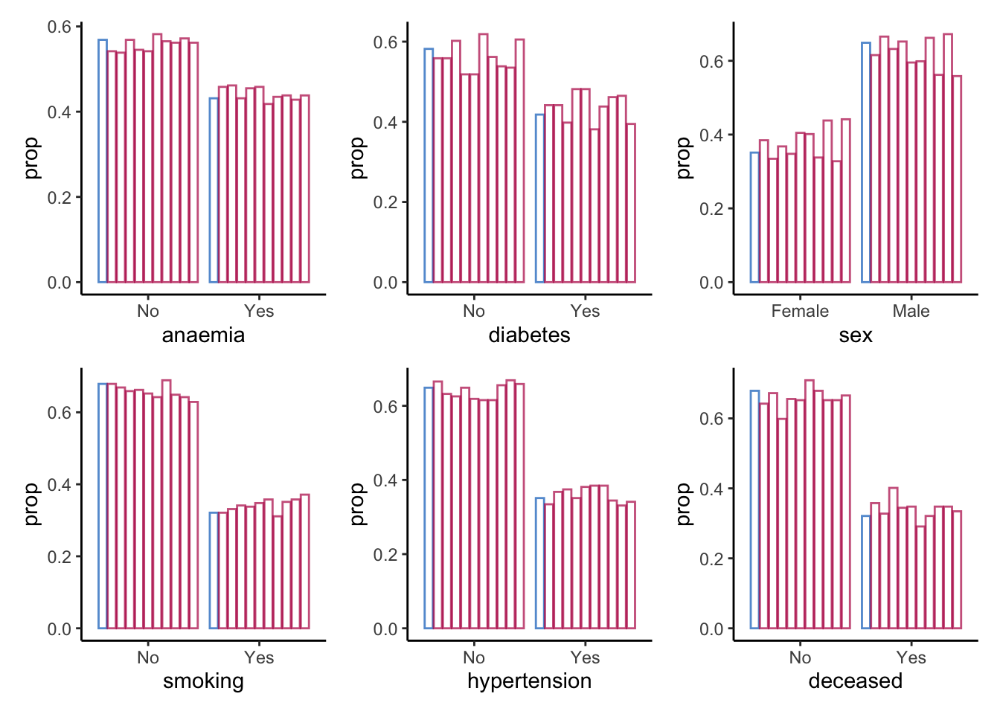
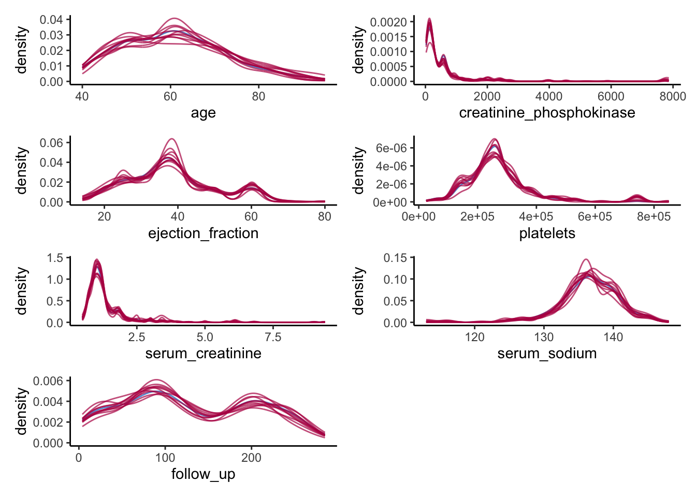

library(mice)
library(ggmice)
library(ggplot2)
library(patchwork)
library(psych)
library(purrr)
library(synthpop)Data Exercise
Exercise in writing synthetic data
set.seed(1)heart_failure <- readRDS(url("https://thomvolker.github.io/UMCUSynthetic/data/heart_failure.RDS"))head(heart_failure) age anaemia creatinine_phosphokinase diabetes ejection_fraction platelets
1 75 No 582 No 20 265000
2 55 No 7861 No 38 263358
3 65 No 146 No 20 162000
4 50 Yes 111 No 20 210000
5 65 Yes 160 Yes 20 327000
6 90 Yes 47 No 40 204000
serum_creatinine serum_sodium sex smoking hypertension deceased follow_up
1 1.9 130 Male No Yes Yes 4
2 1.1 136 Male No No Yes 6
3 1.3 129 Male Yes No Yes 7
4 1.9 137 Male No No Yes 7
5 2.7 116 Female No No Yes 8
6 2.1 132 Male Yes Yes Yes 8summary(heart_failure) age anaemia creatinine_phosphokinase diabetes ejection_fraction
Min. :40.00 No :170 Min. : 23.0 No :174 Min. :14.00
1st Qu.:51.00 Yes:129 1st Qu.: 116.5 Yes:125 1st Qu.:30.00
Median :60.00 Median : 250.0 Median :38.00
Mean :60.83 Mean : 581.8 Mean :38.08
3rd Qu.:70.00 3rd Qu.: 582.0 3rd Qu.:45.00
Max. :95.00 Max. :7861.0 Max. :80.00
platelets serum_creatinine serum_sodium sex smoking
Min. : 25100 Min. :0.500 Min. :113.0 Female:105 No :203
1st Qu.:212500 1st Qu.:0.900 1st Qu.:134.0 Male :194 Yes: 96
Median :262000 Median :1.100 Median :137.0
Mean :263358 Mean :1.394 Mean :136.6
3rd Qu.:303500 3rd Qu.:1.400 3rd Qu.:140.0
Max. :850000 Max. :9.400 Max. :148.0
hypertension deceased follow_up
No :194 No :203 Min. : 4.0
Yes:105 Yes: 96 1st Qu.: 73.0
Median :115.0
Mean :130.3
3rd Qu.:203.0
Max. :285.0 describe(heart_failure) vars n mean sd median trimmed
age 1 299 60.83 11.89 60.0 60.22
anaemia* 2 299 1.43 0.50 1.0 1.41
creatinine_phosphokinase 3 299 581.84 970.29 250.0 365.49
diabetes* 4 299 1.42 0.49 1.0 1.40
ejection_fraction 5 299 38.08 11.83 38.0 37.43
platelets 6 299 263358.03 97804.24 262000.0 256730.09
serum_creatinine 7 299 1.39 1.03 1.1 1.19
serum_sodium 8 299 136.63 4.41 137.0 136.82
sex* 9 299 1.65 0.48 2.0 1.68
smoking* 10 299 1.32 0.47 1.0 1.28
hypertension* 11 299 1.35 0.48 1.0 1.32
deceased* 12 299 1.32 0.47 1.0 1.28
follow_up 13 299 130.26 77.61 115.0 129.28
mad min max range skew kurtosis
age 14.83 40.0 95.0 55.0 0.42 -0.22
anaemia* 0.00 1.0 2.0 1.0 0.28 -1.93
creatinine_phosphokinase 269.83 23.0 7861.0 7838.0 4.42 24.53
diabetes* 0.00 1.0 2.0 1.0 0.33 -1.90
ejection_fraction 11.86 14.0 80.0 66.0 0.55 0.00
platelets 65234.40 25100.0 850000.0 824900.0 1.45 6.03
serum_creatinine 0.30 0.5 9.4 8.9 4.41 25.19
serum_sodium 4.45 113.0 148.0 35.0 -1.04 3.98
sex* 0.00 1.0 2.0 1.0 -0.62 -1.62
smoking* 0.00 1.0 2.0 1.0 0.76 -1.42
hypertension* 0.00 1.0 2.0 1.0 0.62 -1.62
deceased* 0.00 1.0 2.0 1.0 0.76 -1.42
follow_up 105.26 4.0 285.0 281.0 0.13 -1.22
se
age 0.69
anaemia* 0.03
creatinine_phosphokinase 56.11
diabetes* 0.03
ejection_fraction 0.68
platelets 5656.17
serum_creatinine 0.06
serum_sodium 0.26
sex* 0.03
smoking* 0.03
hypertension* 0.03
deceased* 0.03
follow_up 4.49where <- make.where(heart_failure, "all")method <- make.method(heart_failure, where = where)
method[method == "pmm"] <- "norm"syn_param <- mice(heart_failure,
m = 10,
maxit = 1,
metod = method,
where = where,
printFlag = FALSE)complete(syn_param, 4) %>%
head(10) age anaemia creatinine_phosphokinase diabetes ejection_fraction platelets
1 60 Yes 61 No 25 235000
2 65 No 64 No 35 461000
3 72 No 582 No 20 279000
4 75 Yes 482 Yes 38 127000
5 50 Yes 203 Yes 35 140000
6 54 No 55 No 38 211000
7 75 No 371 No 30 166000
8 60 No 291 No 25 203000
9 70 Yes 582 Yes 50 231000
10 58 Yes 160 No 40 225000
serum_creatinine serum_sodium sex smoking hypertension deceased follow_up
1 2.5 137 Female Yes No Yes 65
2 2.9 136 Female No Yes Yes 198
3 1.5 116 Male Yes Yes Yes 100
4 1.4 132 Male Yes No No 7
5 1.9 142 Male No No Yes 198
6 2.0 136 Male No Yes Yes 8
7 1.9 129 Male No Yes Yes 180
8 1.7 135 Male No Yes No 90
9 0.9 143 Male No No No 73
10 1.1 134 Male No No Yes 55heart_failure %>%
head(10) age anaemia creatinine_phosphokinase diabetes ejection_fraction platelets
1 75 No 582 No 20 265000
2 55 No 7861 No 38 263358
3 65 No 146 No 20 162000
4 50 Yes 111 No 20 210000
5 65 Yes 160 Yes 20 327000
6 90 Yes 47 No 40 204000
7 75 Yes 246 No 15 127000
8 60 Yes 315 Yes 60 454000
9 65 No 157 No 65 263358
10 80 Yes 123 No 35 388000
serum_creatinine serum_sodium sex smoking hypertension deceased follow_up
1 1.9 130 Male No Yes Yes 4
2 1.1 136 Male No No Yes 6
3 1.3 129 Male Yes No Yes 7
4 1.9 137 Male No No Yes 7
5 2.7 116 Female No No Yes 8
6 2.1 132 Male Yes Yes Yes 8
7 1.2 137 Male No No Yes 10
8 1.1 131 Male Yes No Yes 10
9 1.5 138 Female No No Yes 10
10 9.4 133 Male Yes Yes Yes 10complete(syn_param, 6) %>%
describe() vars n mean sd median trimmed
age 1 299 62.34 12.51 61.00 61.87
anaemia* 2 299 1.42 0.49 1.00 1.40
creatinine_phosphokinase 3 299 544.73 791.25 292.00 378.67
diabetes* 4 299 1.38 0.49 1.00 1.35
ejection_fraction 5 299 37.55 11.60 38.00 36.79
platelets 6 299 280571.13 110406.13 263358.03 268679.12
serum_creatinine 7 299 1.39 0.99 1.18 1.21
serum_sodium 8 299 136.93 4.59 137.00 137.34
sex* 9 299 1.60 0.49 2.00 1.62
smoking* 10 299 1.36 0.48 1.00 1.32
hypertension* 11 299 1.38 0.49 1.00 1.36
deceased* 12 299 1.29 0.45 1.00 1.24
follow_up 13 299 121.78 73.51 108.00 120.11
mad min max range skew kurtosis
age 13.34 40.0 95.0 55.0 0.28 -0.62
anaemia* 0.00 1.0 2.0 1.0 0.33 -1.90
creatinine_phosphokinase 330.62 23.0 7702.0 7679.0 4.41 28.18
diabetes* 0.00 1.0 2.0 1.0 0.49 -1.77
ejection_fraction 11.86 14.0 80.0 66.0 0.59 0.04
platelets 62800.02 25100.0 742000.0 716900.0 1.86 5.82
serum_creatinine 0.27 0.6 9.4 8.8 4.85 29.91
serum_sodium 2.97 113.0 146.0 33.0 -1.76 6.58
sex* 0.00 1.0 2.0 1.0 -0.40 -1.85
smoking* 0.00 1.0 2.0 1.0 0.59 -1.66
hypertension* 0.00 1.0 2.0 1.0 0.47 -1.78
deceased* 0.00 1.0 2.0 1.0 0.92 -1.17
follow_up 96.37 4.0 285.0 281.0 0.23 -1.11
se
age 0.72
anaemia* 0.03
creatinine_phosphokinase 45.76
diabetes* 0.03
ejection_fraction 0.67
platelets 6384.95
serum_creatinine 0.06
serum_sodium 0.27
sex* 0.03
smoking* 0.03
hypertension* 0.03
deceased* 0.03
follow_up 4.25heart_failure %>%
describe() vars n mean sd median trimmed
age 1 299 60.83 11.89 60.0 60.22
anaemia* 2 299 1.43 0.50 1.0 1.41
creatinine_phosphokinase 3 299 581.84 970.29 250.0 365.49
diabetes* 4 299 1.42 0.49 1.0 1.40
ejection_fraction 5 299 38.08 11.83 38.0 37.43
platelets 6 299 263358.03 97804.24 262000.0 256730.09
serum_creatinine 7 299 1.39 1.03 1.1 1.19
serum_sodium 8 299 136.63 4.41 137.0 136.82
sex* 9 299 1.65 0.48 2.0 1.68
smoking* 10 299 1.32 0.47 1.0 1.28
hypertension* 11 299 1.35 0.48 1.0 1.32
deceased* 12 299 1.32 0.47 1.0 1.28
follow_up 13 299 130.26 77.61 115.0 129.28
mad min max range skew kurtosis
age 14.83 40.0 95.0 55.0 0.42 -0.22
anaemia* 0.00 1.0 2.0 1.0 0.28 -1.93
creatinine_phosphokinase 269.83 23.0 7861.0 7838.0 4.42 24.53
diabetes* 0.00 1.0 2.0 1.0 0.33 -1.90
ejection_fraction 11.86 14.0 80.0 66.0 0.55 0.00
platelets 65234.40 25100.0 850000.0 824900.0 1.45 6.03
serum_creatinine 0.30 0.5 9.4 8.9 4.41 25.19
serum_sodium 4.45 113.0 148.0 35.0 -1.04 3.98
sex* 0.00 1.0 2.0 1.0 -0.62 -1.62
smoking* 0.00 1.0 2.0 1.0 0.76 -1.42
hypertension* 0.00 1.0 2.0 1.0 0.62 -1.62
deceased* 0.00 1.0 2.0 1.0 0.76 -1.42
follow_up 105.26 4.0 285.0 281.0 0.13 -1.22
se
age 0.69
anaemia* 0.03
creatinine_phosphokinase 56.11
diabetes* 0.03
ejection_fraction 0.68
platelets 5656.17
serum_creatinine 0.06
serum_sodium 0.26
sex* 0.03
smoking* 0.03
hypertension* 0.03
deceased* 0.03
follow_up 4.49colnames(heart_failure)[map_lgl(heart_failure, is.factor)] %>%
map(~ ggmice(syn_param, mapping = aes_string(.x, group = '.imp')) +
geom_bar(mapping = aes(y = ..prop..),
position = position_dodge2(),
fill = "transparent",
show.legend = FALSE)) %>%
patchwork::wrap_plots()
colnames(heart_failure)[map_lgl(heart_failure, is.numeric)] %>%
map(~ ggmice(data = syn_param,
mapping = aes_string(x = .x, group = '.imp')) +
geom_density(show.legend = F)) %>%
wrap_plots(ncol = 2)
with(syn_param, glm(deceased ~ age + diabetes + smoking + follow_up,
family = binomial)) |>
pool(rule = "reiter2003") |>
summary() |>
as.data.frame() |>
tibble::column_to_rownames('term') |>
round(3) estimate std.error statistic df p.value
(Intercept) -0.847 0.801 -1.056 808.196 0.291
age 0.015 0.012 1.333 681.390 0.183
diabetesYes -0.173 0.287 -0.601 267.961 0.548
smokingYes 0.042 0.279 0.152 2072.700 0.879
follow_up -0.006 0.002 -3.112 598.188 0.002 glm(deceased ~ age + diabetes + smoking + follow_up,
family = binomial,
data = heart_failure) |>
broom::tidy() |>
tibble::column_to_rownames('term') |>
round(3) estimate std.error statistic p.value
(Intercept) -0.847 0.903 -0.937 0.349
age 0.037 0.013 2.740 0.006
diabetesYes 0.110 0.310 0.355 0.722
smokingYes -0.206 0.326 -0.631 0.528
follow_up -0.019 0.003 -7.486 0.000